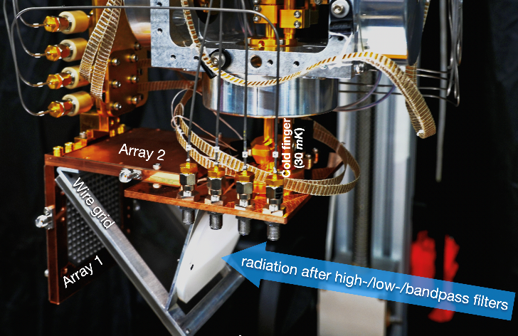

MKID Design and Characterisation
Electromagnetic design and cryogenic characterisation of microwave kinetic inductance detector arrays, from resonator layout and notch-array readout to global fitting of resonator parameters.
Research Fellow · Department of Astronomy · Tsinghua University
Experimental astrophysicist working on superconducting detector technology for submillimetre astronomy. I design and characterise microwave kinetic inductance detector (MKID) arrays, integrate cold optics and cryogenic readout, and use polarimetric observations to study magnetic fields in molecular clouds.
Export the current CV using your browser’s “Save as PDF” option.
Research Scope

Research Expertise
Electromagnetic design and cryogenic characterisation of microwave kinetic inductance detector arrays, from resonator layout and notch-array readout to global fitting of resonator parameters.
Optical design, alignment, and integration of room-temperature and cold optics, together with cryostat assembly and detector–optics co-alignment.
Instrument design and calibration for polarimetric imaging, and interpretation of the data through Davis–Chandrasekhar–Fermi analysis of magnetised molecular clouds.
Selected Publications
Lyu, W.-T., Li, H.-B., Hu, J., Shi, S.-C., Zhi, Q., & Li, J. Superconductor Science and Technology.
Lyu, W.-T., Li, H.-B., Zhi, Q., Li, J., & Shi, S.-C. RAS Techniques and Instruments, rzag007.
吕伟涛, 黄俊锟, 孙笳淋, 李华白. 天文学进展 (Progress in Astronomy), 43(4).
Lyu, W.-T., Huang, J., & Li, H.-B. Millimeter, Submillimeter, and Far-Infrared Detectors and Instrumentation for Astronomy XII (Proc. SPIE 13102), 131021D.
Lyu, W.-T., Zhi, Q., Hu, J., Li, J., & Shi, S.-C. Chinese Physics B, 33(2), 027401.
Lv, W.-T., Ding, J.-Q., Zhi, Q., Wang, Z., Li, J., & Shi, S.-C. AIP Advances, 11(9), 095308.
Academic Path
Department of Astronomy, Tsinghua University
Research with Prof. Li Di (李菂) on instrumentation for radio and millimetre-wave astronomy.
Department of Physics, The Chinese University of Hong Kong
Supervisor: Prof. Hua-Bai Li (李華白). Submillimetre polarimetry and MKID instrumentation, and the magnetic and turbulent structure of molecular clouds.
School of Astronomy and Space Science, University of Science and Technology of China; research at Purple Mountain Observatory, CAS
Advisor: Prof. Sheng-Cai Shi (史生才). Superconducting resonator design and readout for MKID arrays.
School of Physics, Huazhong University of Science and Technology
Research Project
A submillimetre astronomical camera built around superconducting MKIDs. My role covers cryostat system integration, detector mounting, and the alignment of cold optics.
Technical Skills
Superconducting resonators and MKID arrays, notch-array readout, and device characterisation.
Cryostat design and integration, sub-kelvin detector operation, and thermal and stray-light control.
Signal processing, instrument calibration, resonator fitting, and polarisation analysis of molecular-cloud data.
Python for data reduction and simulation, and electromagnetic modelling of superconducting resonators.
Contact
For research discussions, collaborations, or requests for data and instrumentation details, please get in touch.